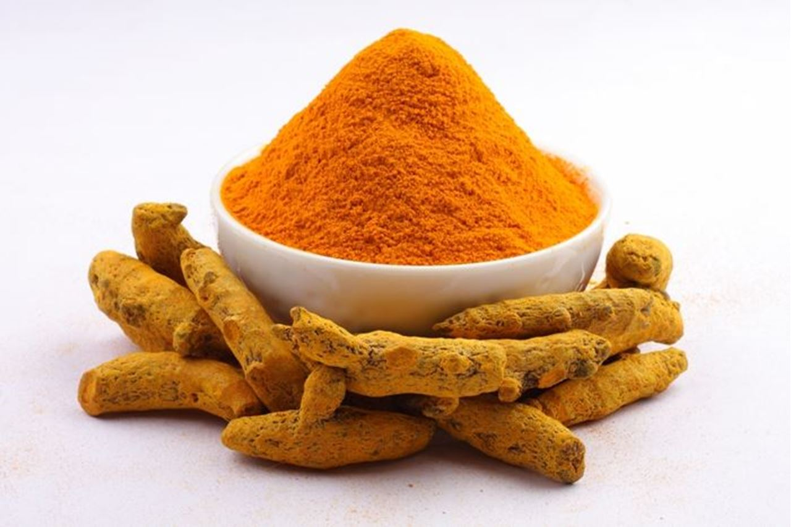

साधारण हल्दी का उपयोग तो हम सभी अपने रोजाना के भोजन व औषधि के रुप में करते हैं लेकिन बहुत कम लोग जानते हैं कि साधारण हल्दी के अलावा दारु हल्दी के भी अनेक औषधिय प्रयोग आयुर्वेद में बताए गए हैं। दारु हल्दी का नाम आयुर्वेद के जानकारों के लिए इसलिए महत्वपूर्ण है क्योंकि इससे रस प्राप्त किया जाता है जिसका रसांजन बनाया जाता है। इसमें पाया जानेवाला तिक्त क्षाराभ (बर्बेरिन) बड़ा ही गुणकारी होता है। रसांजन बनाने के लिए दारुहरिद्रा की जड़ वाले भाग में स्थित तने को सोलह गुना पानी में उबालें। जब चार भाग शेष रहे तो छान लें, अब इस काढ़े में बराबर मात्रा में गाय का दूध मिलाकर फिर धीमी आंच पर पकाएं और जब यह काढ़ा शेष रह जाए मतलब रसांजन तैयार है। आइए अब इसके औषधीय प्रयोग को जानें....
- अगर कहीं पर चोट लगी हो या सूजन आ गई हो तो रसांजन के लेप मात्र से सूजन और दर्द में काफी लाभ मिलता है।
- यदि आँखों में लालिमा का कारण अभिष्यंद ( कंजाक्तिविटिस) हो तो 250 मिलीग्राम रसांजन में 25 मिली गुलाबजल मिलाकर आँखों में एक बूंद टपका देने से लाभ मिलता है।
- कान के दर्द या स्राव में भी इसे ड्राप के रूप में प्रयोग किया जा सकता है।
- कहीं भी किसी प्रकार का घाव हो जाए तो रसांजन का लेप बड़ा ही फायदेमंद होता है यह संक्रमण को खत्म करता है।
- यदि गला खराब हो तो रसांजन के गरारे करने से बहुत लाभ मिलता है।
- दारुहरिद्रा से का काढा यकृत (लीवर ) से सम्बंधित विकारों में भी लाभकारी होता है।
- यदि रोगी सूखी खांसी से परेशान हो तो दारुहल्दी का चूर्ण भी बड़ा लाभकारी होता है।
- श्वेतप्रदर (ल्युकोरिया) में दारुहरिद्रा या दारुहल्दी चूर्ण को पुष्यानुग चूर्ण के साथ सममात्रा में 2.5 से 5 ग्राम की मात्रा में लेना लाभकारी होता है।
- बुखार में दारुहल्दी का काढ़ा लाभदायक होता है। ऐसे ही अनेक गुणों से युक्त यह वनस्पति बाजार में मिलावट के कारण निष्प्रभावी हो सकती है लेकिन इसे पहचानने का सबसे आसान तरीका यह है कि़ इसे जितना भी उबालें इसका पीलापन नहीं जाता है।